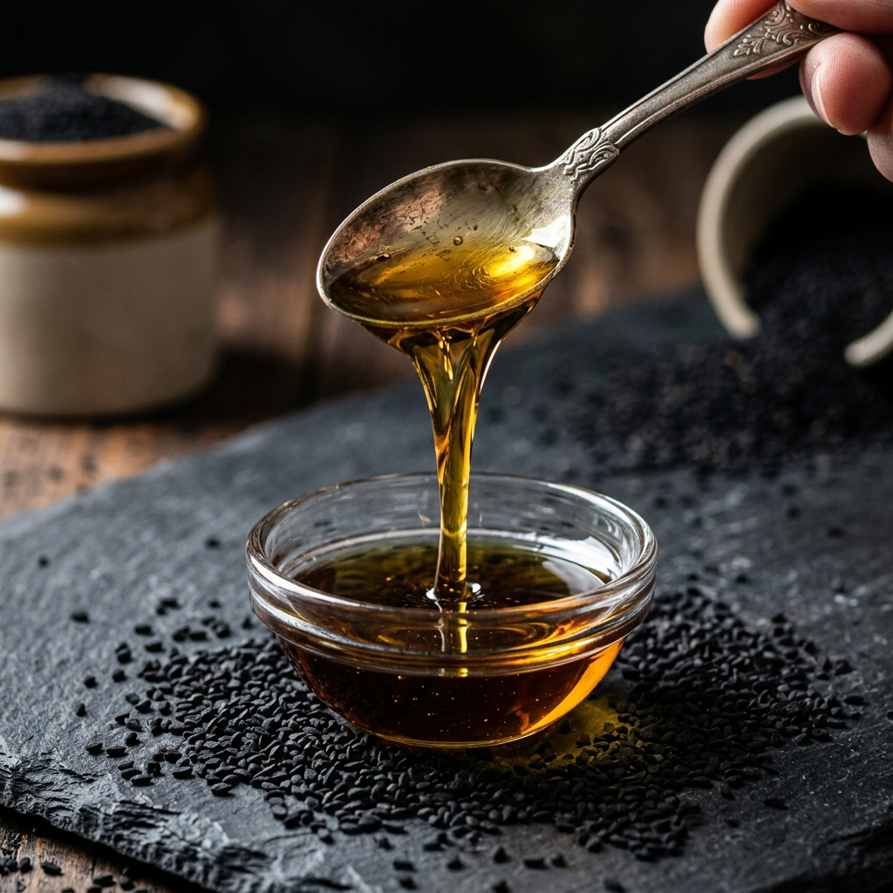

Schwarzkümmelöl (Nigella Sativa)
100% naturreines, kaltgepresstes Schwarzkümmelöl aus Nigella Sativa. Premium-Qualität mit extra hohem Thymochinongehalt. Das pure, vegane Gold Anatoliens.
100% naturreines, kaltgepresstes Schwarzkümmelöl aus Nigella Sativa. Premium-Qualität mit extra hohem Thymochinongehalt. Das pure, vegane Gold Anatoliens.
Das pure Gold Anatoliens.

Schwarzkümmelöl (oft auch als Nigella Sativa Öl bezeichnet) wird aus den pechschwarzen Samen des Schwarzkümmels (auf Türkisch Çörek Otu) gewonnen. Obwohl der Name "Kümmel" enthält, ist diese Pflanze weder mit dem gewöhnlichen Kümmel noch mit Kreuzkümmel verwandt. Sie gehört zur Familie der Hahnenfußgewächse und gedeiht am besten im trockenen, sonnenverwöhnten Klima des Nahen Ostens und Anatoliens.
Die Faszination für Schwarzkümmelöl reicht Jahrtausende zurück. Schon im antiken Ägypten galt es als das "Gold der Pharaonen". Man fand im Grab des legendären Pharaos Tutanchamun ein intaktes Fläschchen dieses kostbaren Öls. Später verankerte die islamische Tradition die Samen fest im Alltag, geprägt durch die Überlieferung:
"Schwarzkümmel ist ein Heilmittel für jede Krankheit außer den Tod."
Heute belegen hunderte wissenschaftliche Studien genau das, was die antiken Heiler wussten: Schwarzkümmelöl ist eine echte Naturgewalt.
Warum Hitze der absolute Feind ist.
Der alles entscheidende Qualitätsfaktor bei Schwarzkümmelöl ist der Herstellungsprozess. Viele industrielle Hersteller erhitzen die Schwarzkümmelsamen vor oder während der Pressung, um eine höhere Ölausbeute zu erzielen. Das Problem: Die wertvollsten Inhaltsstoffe, insbesondere die flüchtigen ätherischen Öle, verbrennen bei Hitze sofort.
Anadoa Naturhaus nutzt ausschließlich ein striktes Kaltpressverfahren (Cold Press). Nur so behält das Öl seinen vollen Nährwert, seine dunkle Farbe und das intensiv würzige Aroma.
Wenn Sie Schwarzkümmelöl kaufen, gibt es einen zentralen Wert, auf den Sie achten müssen: Thymochinon (Timoquinon). Dies ist der Hauptwirkstoff im Schwarzkümmelöl, der für die extrem starken antioxidativen und entzündungshemmenden Eigenschaften verantwortlich ist. Ein Premium Öl zeichnet sich durch einen von Natur aus extra hohen Thymochinongehalt aus.
Schwarzkümmelöl stimuliert und moduliert die körpereigenen Abwehrkräfte und schützt vor oxidatvem Stress.
Das Öl hat sich bei chronischen Entzündungen (z.B. Rheuma oder Gelenkschmerzen) als äußerst wertvoll erwiesen.
Schwarzkümmelöl wirkt bronchienerweiternd und schleimlösend, weshalb es oft bei Asthma oder starkem Husten eingesetzt wird.
Es reguliert die Histaminausschüttung und kann Heuschnupfen und allergische Reaktionen drastisch lindern.
Äußerlich angewendet beruhigt Schwarzkümmelöl Ekzeme, Akne und Psoriasis und kräftigt Haarwurzeln.
Das Öl wirkt entkrampfend, reduziert Blähungen und fördert ein gesundes Darmmilieu.
Für Erwachsene empfiehlt sich täglich ein Teelöffel reines Schwarzkümmelöl, idealerweise morgens auf nüchternen Magen oder gemischt mit etwas Honig. Sie können das Öl auch in Joghurt, Smoothies oder über Salate geben (niemals erhitzen!).
Tragen Sie einige Tropfen Schwarzkümmelöl direkt auf gereizte Hautpartien, Akne oder Ekzeme auf. Für die Haarpflege können Sie das Öl pur in die Kopfhaut massieren und nach 30 Minuten Einwirkzeit auswaschen.
Ja, der intensiv pfeffrige und würzige Geschmack des Schwarzkümmelöls passt hervorragend zu Dressings, Dips oder als Finish über warmen Gerichten. Braten dürfen Sie damit jedoch nicht, da Hitze die wertvollen Fettsäuren zerstört.
Eine leichte Trübung und abgesetzte Schwarzkümmelsamen-Schwebstoffe sind das beste Qualitätsmerkmal! Es bedeutet, dass das Schwarzkümmelöl nicht industriell gefiltert oder raffiniert wurde. Schütteln Sie die Flasche vor Gebrauch einfach leicht.
Schwangere sollten Schwarzkümmelöl meiden, da es in großen Mengen wehenfördernd wirken kann. Wenn Sie starke Medikamente (z.B. Blutverdünner) einnehmen, sollten Sie vorab Rücksprache mit einem Arzt halten.
Natur pur. Höchste Qualität direkt aus Anatolien.